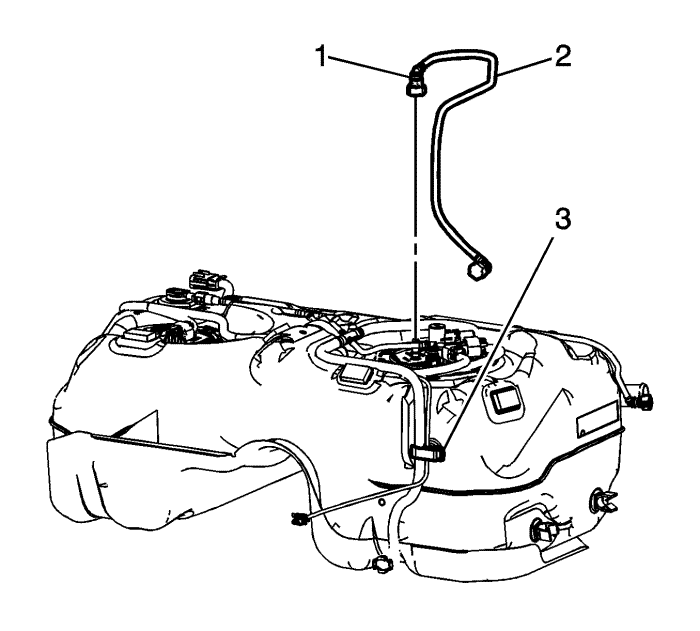

Sustitución del módulo de la bomba del combustible del depósito de combustible
Herramientas especiales
CH 45722 Llave del anillo de bloqueo del emisor de combustible
Si desea informarse sobre herramientas regionales equivalentes, consultar Herramientas especiales .
Procedimiento de desmontaje
Atención: Limpie todas las conexiones de las tuberías de combustible y los tubos flexibles y las zonas circundantes antes del desmontaje para evitar que se contamine el sistema de combustible. Antes de intentar desmontarlo, pulverice aceite penetrante en la espiga del anillo de bloqueo de leva del módulo de la bomba de combustible.

- Desmonte el módulo de la bomba de combustible del depósito de combustible secundario. Consultar Sustitución del módulo de la bomba del combustible del depósito de combustible -Secundario .
- Desconecte el adaptador de conexión rápida de la tubería de alimentación de combustible (1) del módulo de la bomba de combustible del depósito de combustible. Consultar Reparación del cierre rápido con collar de plástico .
- Abra el clip de fijación (3) del depósito de combustible y extraiga la tubería de alimentación de combustible (2).
- Desenchufe los conectores eléctricos del mazo de cables del motor (2) del módulo principal de la bomba de combustible del depósito de combustible y del sensor de presión del depósito de combustible.
- Desconecte los adaptadores de conexión rápida de la tubería de vapor (1) del módulo de la bomba de combustible del depósito de combustible. Consultar Reparación del cierre rápido con collar de plástico .
- Monte la llaveCH 45722 (1) en el anillo de bloqueo del módulo de la bomba de combustible del tanque de combustible.

Atención: Evite dañar el anillo de bloqueo. Utilice únicamente la herramienta J-45722 para evitar dañar el anillo de bloqueo.
Nota: NO utilice herramientas de impacto. Se necesita bastante fuerza para soltar el anillo de bloqueo. No se recomienda usar un martillo y un destornillador. Fije el depósito de combustible para que no gire.
- Utilizando la llave CH 45722 y una barra larga, gire el anillo de bloqueo a la izquierda para desbloquear el anillo de bloqueo del módulo de la bomba de combustible del depósito de combustible.
- Quite la la llave CH 45722 (1).
- Retire el anillo de bloqueo del módulo de la bomba de combustible del tanque de combustible (1).
Atención: No manipule el conjunto del emisor de combustible con los tubos de combustible. La cantidad de palanca generada por la manipulación de los tubos de combustible podría dañar las uniones.
- Levante lentamente el módulo (2) hasta que el brazo del flotador del sensor de nivel de combustible quede visible.
Nota: Al retirar el módulo del depósito de combustible, asegúrese de que la cubeta del depósito del módulo está llena de combustible. El módulo puede inclinarse ligeramente durante la extracción para evitar doblar el brazo del flotador del sensor de nivel de combustible.
- Incline el módulo hacia la parte trasera del depósito de combustible para permitir que el brazo del flotador del sensor de nivel despeje la entrada del depósito. Retire el módulo del depósito.
- Vierta con cuidado el combustible de la cubeta del depósito del módulo en un contenedor de combustible adecuado.
Nota: NO reutilice la junta tórica del módulo del depósito de combustible antiguo.
- Desmonte y deseche la junta tórica (3) del módulo de la bomba de combustible del depósito de combustible.
- Si sustituye el módulo de la bomba de combustible del depósito de combustible, desmonte el sensor de nivel de combustible, si fuese necesario. Consultar Sustitución del sensor del nivel de combustible .
Nota:
| • | Algunos anillos de bloqueo se fabrican con la etiqueta "NO REUTILIZAR" impresa en los mismos. Estos anillos de bloqueo pueden reutilizarse si no están dañados o alabeados. |
| • | Revise el anillo de bloqueo en busca de daños debidos a un desmontaje o montaje inadecuado. Si detectase daños, monte un NUEVO anillo de bloqueo. |
| • | Compruebe la planeidad del anillo de bloqueo. |
- Coloque el anillo de bloqueo sobre una superficie plana. Mida la separación entre el anillo de bloqueo y la superficie plana utilizando una galga de espesores en 7 puntos.
- Si el alabeo es inferior a 0,41 mm (0,016 pulg.), el anillo de bloqueo no requiere sustitución.
- Si el alabeo es superior a 0,41 mm (0,016 pulg.), el anillo de bloqueo debe ser sustituido.
Procedimiento de montaje
- Si se sustituye el módulo de la bomba de combustible del depósito de combustible, monte, si fuera necesario, el sensor de nivel de combustible. Consultar Sustitución del sensor del nivel de combustible .
- Monte una nueva junta tórica (3) del módulo del depósito de combustible en el depósito.
- Incline el módulo hacia la parte trasera del depósito de combustible para permitir que el brazo del flotador del sensor de nivel de combustible despeje la entrada del depósito. Monte el módulo en el depósito de combustible.
- Baje el conjunto del módulo (2) hasta el depósito.
- Coloque y monte el anillo de bloqueo del módulo del depósito de combustible (1).
- Monte la llave CH 45722 en el anillo de bloqueo del módulo de la bomba de combustible del tanque de combustible.
Nota: sustituya siempre la junta del módulo del depósito de combustible al instalar el módulo del depósito de combustible. Sustituya, si fuera necesario, el anillo de bloqueo. NO aplique ningún tipo de lubricación en la ranura de la junta.
Asegúrese de que el anillo de bloqueo se instala en el lado correcto, mirando hacia arriba. Un anillo de bloque instalado correctamente sólo girará hacia la derecha.
- Utilice la llave CH 45722 y una barra larga para girar el anillo de bloqueo a la derecha, bloqueando el anillo de bloqueo del módulo del depósito de combustible.
- Extraiga la llave CH 45722 (1) del anillo de bloqueo del módulo de la bomba de combustible del tanque de combustible.
- Conecte los adaptadores de conexión rápida de la tubería de vapor (2) al módulo de la bomba de combustible del depósito de combustible. Consultar Reparación del cierre rápido con collar de plástico .
- Enchufe los conectores eléctricos del mazo de cables del motor (1) al módulo principal de la bomba de combustible del depósito de combustible y al sensor de presión del depósito de combustible.
- Coloque la tubería de alimentación de combustible (2) en su posición y conecte el adaptador de conexión rápida (1) de la tubería de alimentación de combustible al módulo de la bomba de combustible del depósito de combustible. Consultar Reparación del cierre rápido con collar de plástico .
- Cierre el clic de fijación (3) en el depósito de combustible.
- Monte el módulo de la bomba de combustible del depósito de combustible secundario. Consultar Sustitución del módulo de la bomba del combustible del depósito de combustible -Secundario .
| © Copyright Chevrolet Europe. All rights reserved |